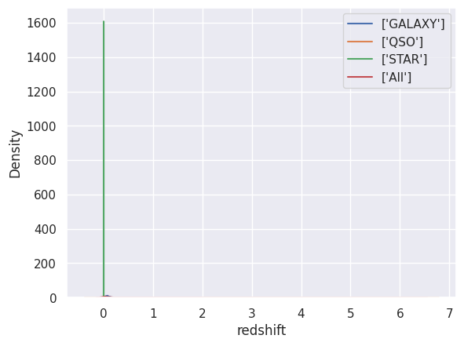
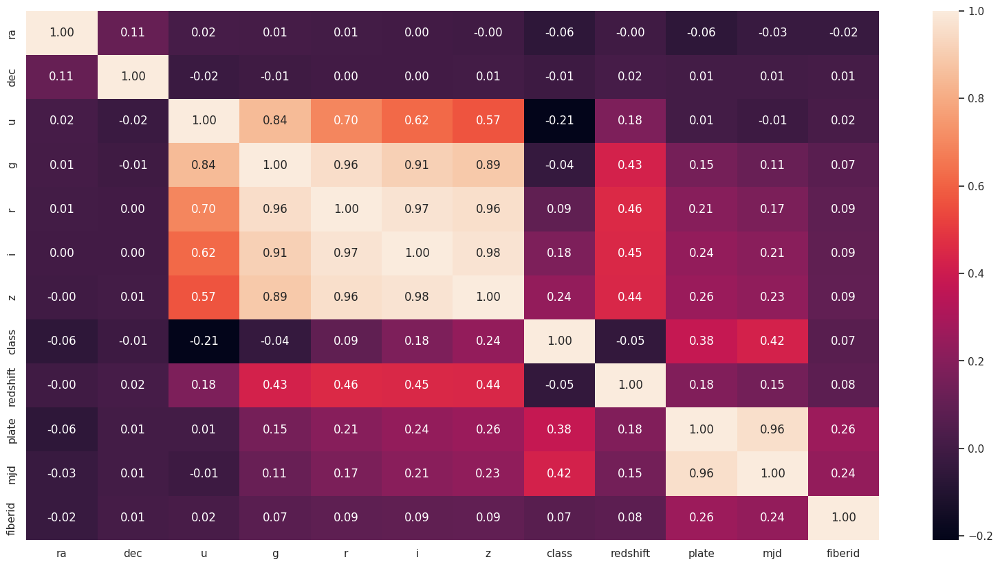
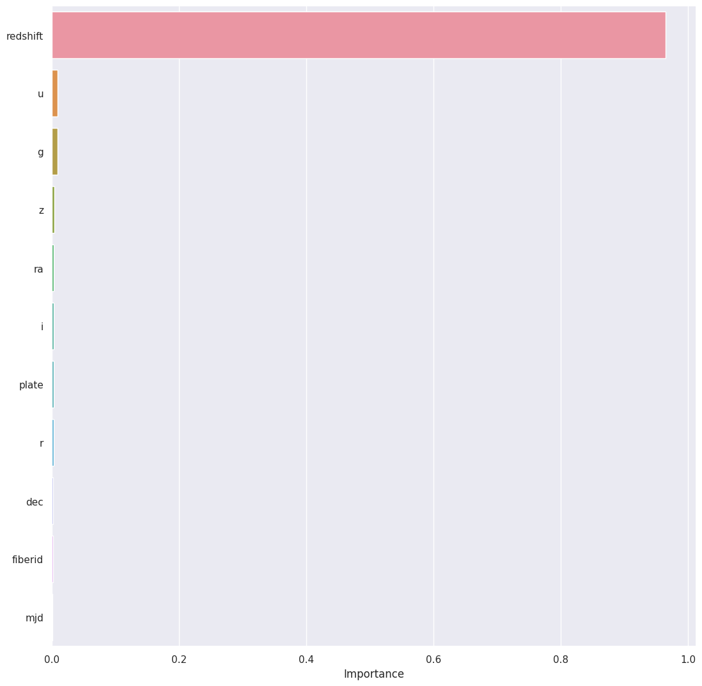
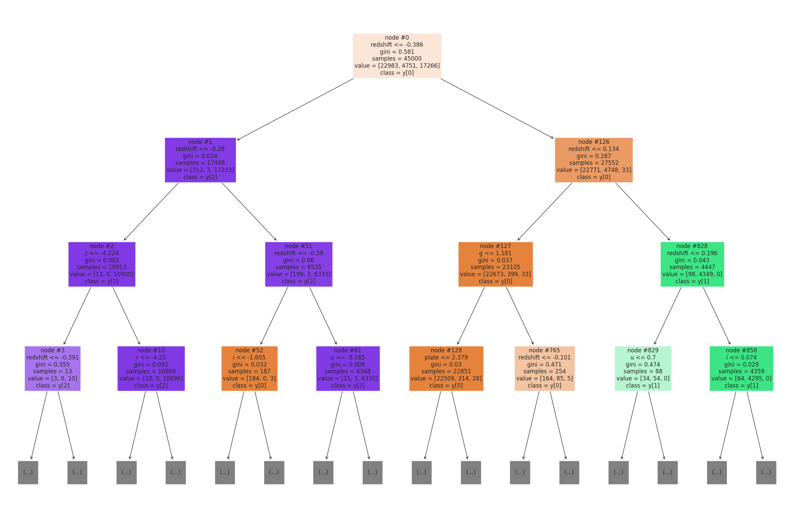
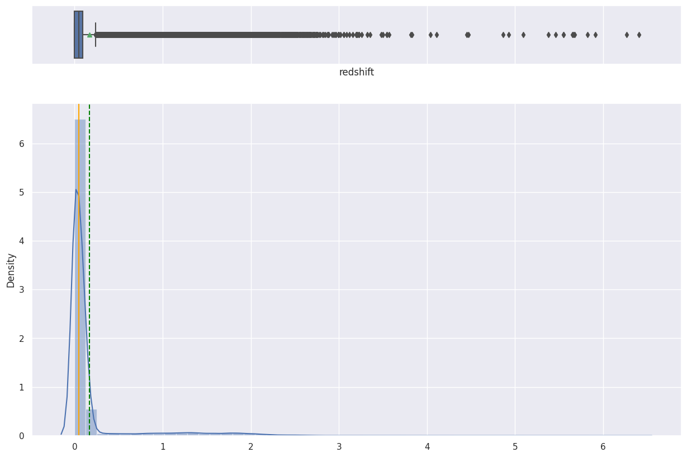
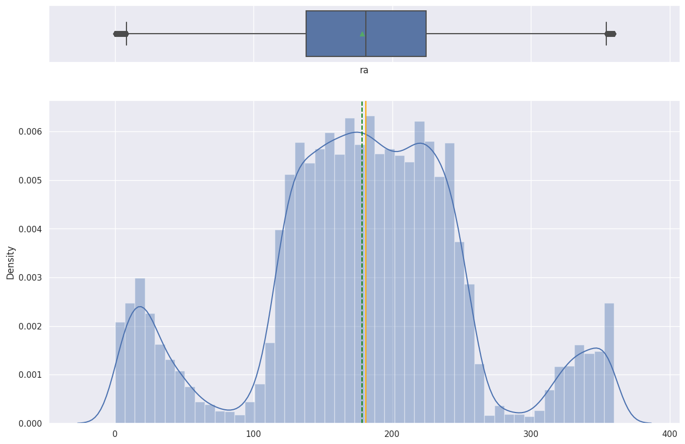
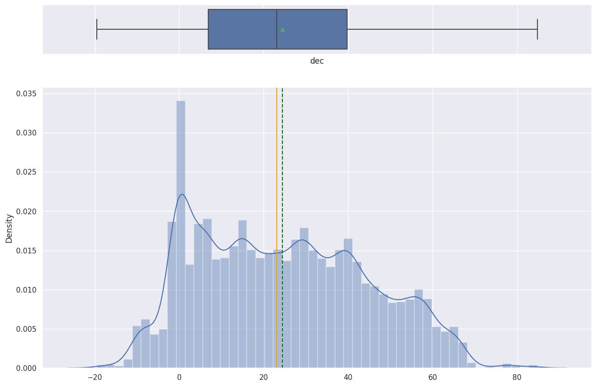
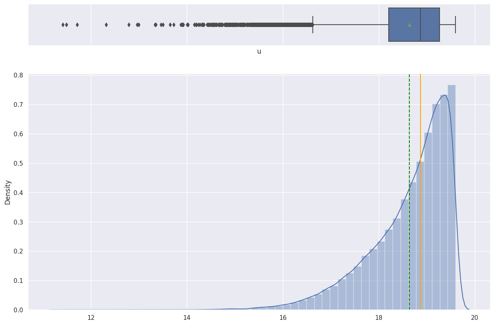

Overview
We taught a computer to look at telescope measurements and tell whether each object in the sky is a star, a galaxy, or a quasar.
- Goal: multiclass classification of every observed object into Star, Galaxy, or Quasar (QSO) from tabular sky-survey features.
- Astronomy generates vast datasets, making manual labeling impractical and machine learning a natural fit for the task.
- Quasars are rare, supermassive-black-hole-powered objects distinguished mainly by their extreme redshift.
- Approach: supervised non-linear methods, comparing k-Nearest Neighbors against a Decision Tree classifier.
Methodology
flowchart LR A[Raw Data] --> B[Clean & Encode] B --> C[EDA] C --> D[Train/Test Split] D --> E["Random Forest / Decision Tree / KNN / PCA"] E --> F["Tune (Cross-Validation)"] F --> G["Evaluate: Recall / F1 / ROC"] G --> H[Interpret]
The Data
We used a quarter-million real sky observations from a major astronomical survey, each described by 17 measured features.
- Source: Sloan Digital Sky Survey (SDSS) with 250,000 observations across 18 columns and zero missing or duplicate rows.
- Features include photometric filters (u, g, r, i, z), sky coordinates (ra, dec), redshift, and survey metadata.
- Class balance is uneven: 51.1% Galaxy, 38.4% Star, 10.6% Quasar.
- Sampled 50,000 rows for modeling; dropped ID columns (objid, specobjid) that carry no predictive value.

Exploratory Analysis
We charted each measurement to see how the three object types differ and which features actually carry useful signal.
- Univariate plots showed plate, field, dec, and redshift are right-skewed with visible outliers.
- Redshift needed a log transform to be readable; its distribution clearly separates the quasar class.
- Photometric filters r, i, and z share near-identical distributions, while u and g are slightly left-skewed.
- Correlation heatmap revealed strong positive links among filters (z-g, z-r, i-r) and redshift negatively correlated with class.


Key Drivers / Features
One measurement, redshift, turned out to matter far more than any other for telling the objects apart.
- Redshift dominated feature importance and was the Decision Tree's very first (root) split.
- This matches known astronomy: high redshift is a defining trait of distant quasars in the expanding universe.
- Low-signal columns (rerun, run, field, camcol, fiberid) showed no class separation and were dropped.
- After pruning, 11 features remained for the final models, keeping photometric filters and redshift.

Modeling & Results
A simple decision tree read the data almost perfectly, beating the alternative method by a wide margin.
- k-Nearest Neighbors reached only ~0.82 accuracy and ~0.80 weighted F1 on test, falling short of the 90%+ target.
- Applying PCA hurt kNN, dropping test accuracy to ~0.78 weighted F1.
- The Decision Tree achieved ~0.99 weighted precision, recall, and F1 on the test set.
- 5-fold cross-validation confirmed robustness with an average score of 0.983; scaling made no difference.

Key Takeaways
A fast, easy-to-explain model can sort sky objects with near-perfect accuracy, making it a practical second opinion for astronomers.
- Decision Trees outperformed kNN while being more computationally efficient on large astronomical data.
- The model rediscovered domain knowledge unaided: redshift is the key to classifying celestial objects.
- At 90%+ performance, the tree is recommended as a quick screening tool over costlier ensemble methods.
- Tree splits at orthogonal boundaries suit naturally bounded feature ranges of stars, galaxies, and quasars.
- Built with: pandas, NumPy, scikit-learn, Matplotlib, seaborn
More Visualizations




Tech Stack
- pandas — data wrangling and tabular manipulation
- numpy — fast numerical arrays
- scikit-learn — modeling, pipelines, and evaluation
- seaborn — statistical visualization
- matplotlib — plotting
Attribution
This project was completed as part of the MIT Applied Data Science Program (MIT IDSS / Great Learning). The program provided the case-study scaffolding; the analysis, code, and results are my own. Published with permission, for portfolio use only.